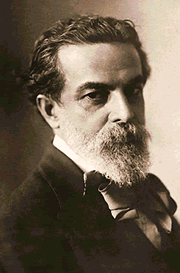

ALBERTO NEPOMUCENO
Alberto Nepomuceno (Fortaleza, 6 de julho de 1864 — Rio de Janeiro, 16 de outubro de 1920) foi um compositor, pianista, regente e abolicionista. Considerado por muitos pesquisadores o "pai" do nacionalismo no Brasil, foi pioneiro em misturar elementos afro-brasileiros na música erudita com a peça Dança de Negros - composta um ano antes da abolição da escravidão no país. Chegou a ser presidente do Instituto Brasileiro de Música, maior cargo que um músico podia ocupar, lá defendendo a utilização da língua portuguesa no canto lírico e dando destaque a jovens compositores tais como Heitor Villa Lobos.
“Não tem pátria um povo que não canta em sua língua” - Alberto Nepomuceno
Partituras
 Alberto Nepomuceno - Série Brasileira - IV Batuque
Alberto Nepomuceno - Série Brasileira - IV Batuque